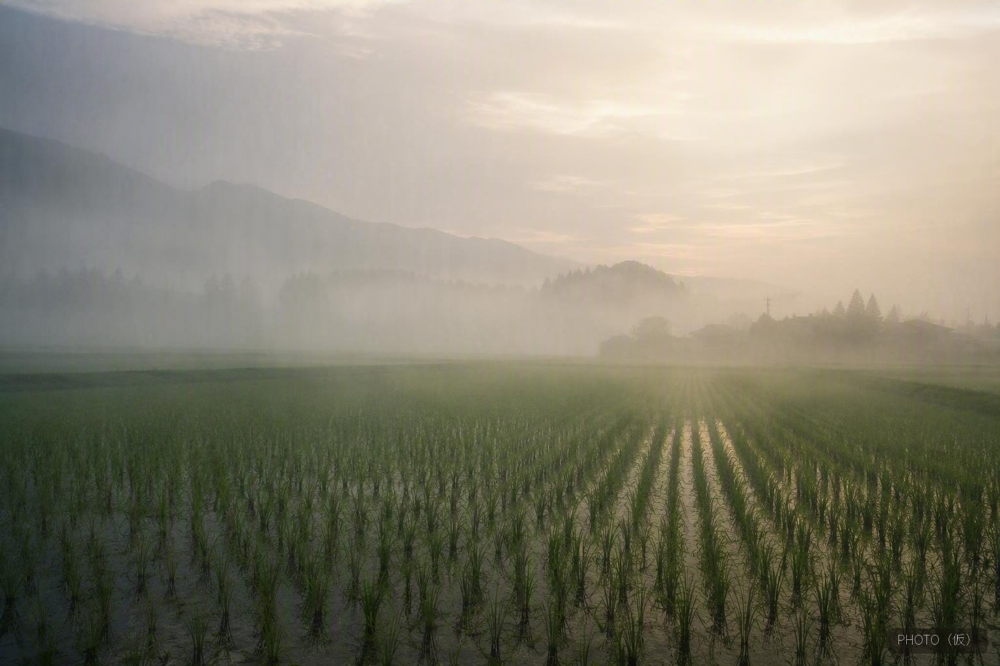
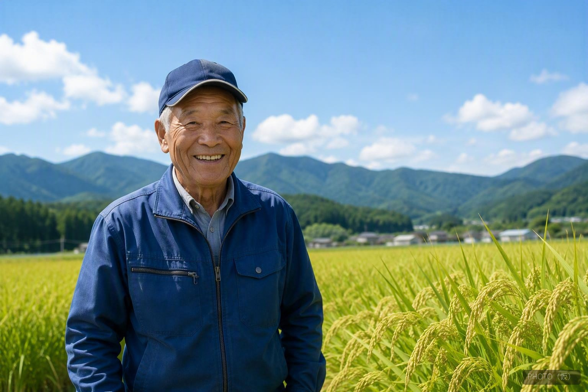
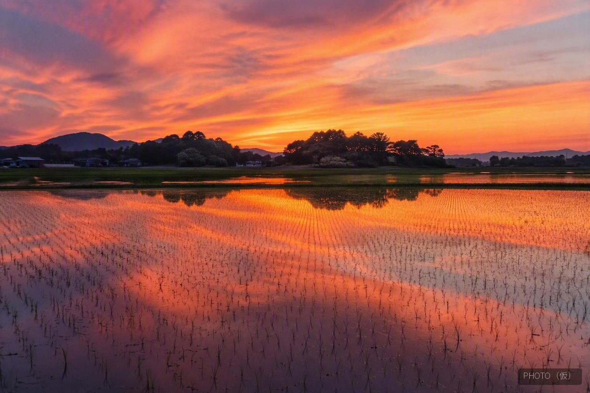

兵庫県三木市吉川町、加東市東条地区・社町――この一帯は、酒造好適米「山田錦」の産地の中でも最上級と評される「特A地区」と呼ばれています。良質な酒米を生み出すために磨かれてきたこの土地の条件は、実は食用米にとっても大切な恵みです。
| 地形 | 標高のある山間の棚田地帯。谷筋に水はけの良い田んぼが広がる |
|---|---|
| 気候 | 瀬戸内海式気候。日照時間が長く降水量は少なめ、昼夜の寒暖差が大きい |
| 土壌 | 養分・水分の保持力が高い粘土質の土壌 |


この土地の昼夜の気温差は10℃以上になることもあるといわれています。日中にしっかりと光合成をおこない、夜に涼しくなることで養分の消耗が抑えられ、稲にじっくりと旨みと甘みが蓄えられます。この寒暖差こそが、山田錦はもちろん、私たちが育てる食用米のおいしさの理由でもあります。
この地域には、酒造メーカーと生産者が長年にわたって信頼関係を築いてきた歴史があります。土地の条件を見極め、丁寧に米と向き合ってきた先人たちの知恵は、今も変わらずこの土地に息づいています。私たちのとうじょう米は、その土地の恵みを受け継ぎながら、日々の食卓のための米づくりに取り組んでいます。
特A地区の生産者は、酒米の最高峰「山田錦」と長年向き合ってきた酒米農家です。山田錦の栽培は、食用米よりもはるかにシビアな管理を求められます。背丈が高く、風雨に弱くて倒れやすいため、コンバインでの刈り取りひとつをとっても難しさが伴います。ひと株ひと株の生育を見極め、天候を読みながら手をかける――そうした積み重ねが欠かせません。
とりわけ神経を使うのが、肥料のコントロールです。肥料が多すぎれば茎が伸びて倒れやすくなり、米の成分そのものが変わって雑味の原因にもなります。少なすぎれば十分に実りません。山田錦づくりでは、この繊細なさじ加減を一年を通して極めて厳密に管理します。特A地区の農家は、そのシビアなコントロールを長年かけて体得してきた熟練の担い手たちなのです。
| 倒伏しやすさ | 背が高く風雨で倒れやすい。天候を読み、株の状態を見極める管理が必要 |
|---|---|
| 収穫の難しさ | 倒れやすいためコンバインでの刈り取りに高い技術と手間がかかる |
| 肥料管理 | 多すぎると徒長・倒伏を招き、成分が変わって雑味の原因に。極めて厳密なさじ加減が要る |
山田錦は日本酒の原料として最適化された品種であり、一般的な食用米とは特性が異なります。私たちが育てているのは、あくまで「食べるお米」であるヒノヒカリとコノホシです。しかし、酒米づくりで培われたあのシビアな栽培技術を、そのまま食用米づくりに注ぐとどうなるでしょうか。肥料の微妙なさじ加減を読み、雑味を出さないように育てる――その熟練の手が、特A地区の肥沃な土地で食用米を育てるのです。
だからこそ、山田錦の熟練農家が特A地区で丹精した食用米は、他の地域の食用米よりもかなりおいしいと評判をいただいています。酒米で鍛えられた技術と、酒米の聖地の土壌・気候。その両方が重なることで、日々のごはんに確かな深みが生まれます。
大地の恵みと、先人から受け継いだ技を、そのままに。日々のごはんへ。それが、とうじょう米の米づくりです。

